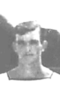

In Memory of
Air Mechanic 1st Class GLYN DALY
L/FX. 684324, H.M.S. Theseus, Royal Navy
who died age 22
on 06 August 1947
Foster-son of Amelia Hawkes, of Long Crendon, Buckinghamshire.
Remembered with honour
LEE-ON-SOLENT MEMORIAL
THESE OFFICERS AND MEN OF THE FLEET AIR ARM DIED IN THE SERVICE OF THEIR COUNTRY AND HAVE NO GRAVE BUT THE SEA.
Glyn (Spiv) Daly was Airframe Mechanic to 812 Squadron's C.O. L Cdr D.R.M. Wynne Roberts. He was tragically killed 6th August 1947 when a Firefly of 812 Squadron landed heavily on the flight deck, bounced over the crash barriers and landed on top of Spiv who was sat on the cockpit of the C.O's aircraft parked at the forward end of the deck Both aircraft crashed into the sea, and Spiv's body was not recovered.